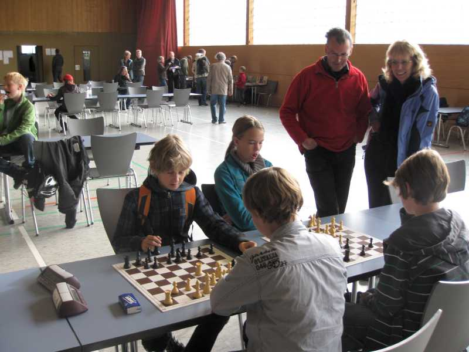
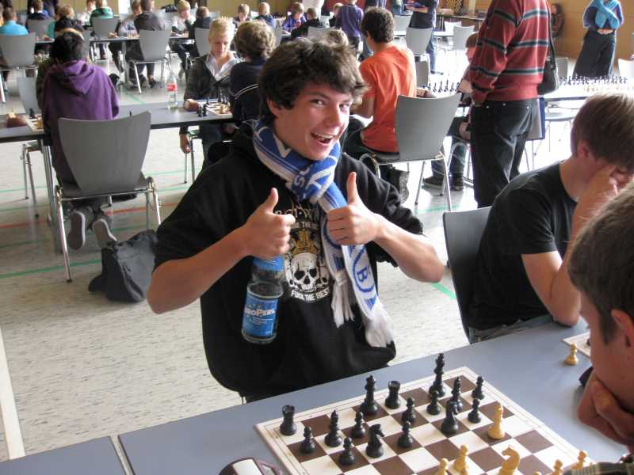
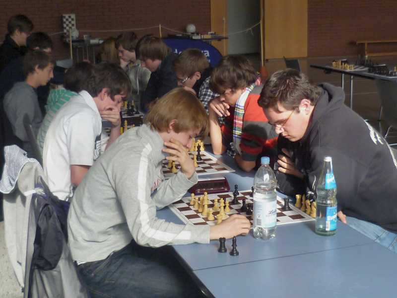
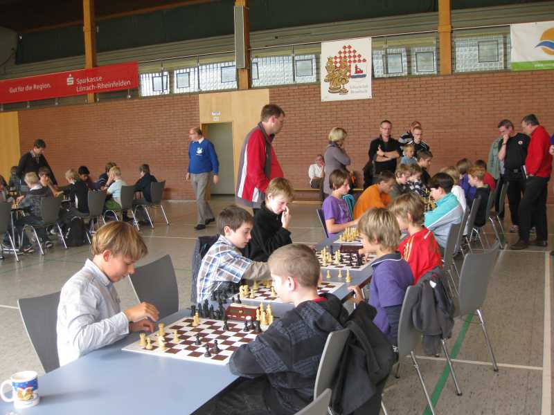
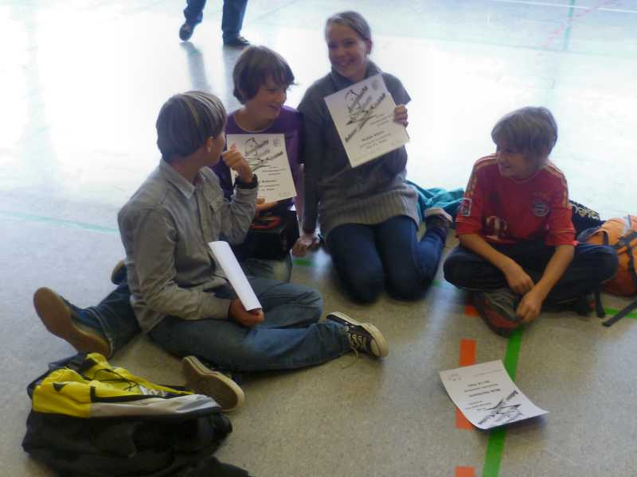
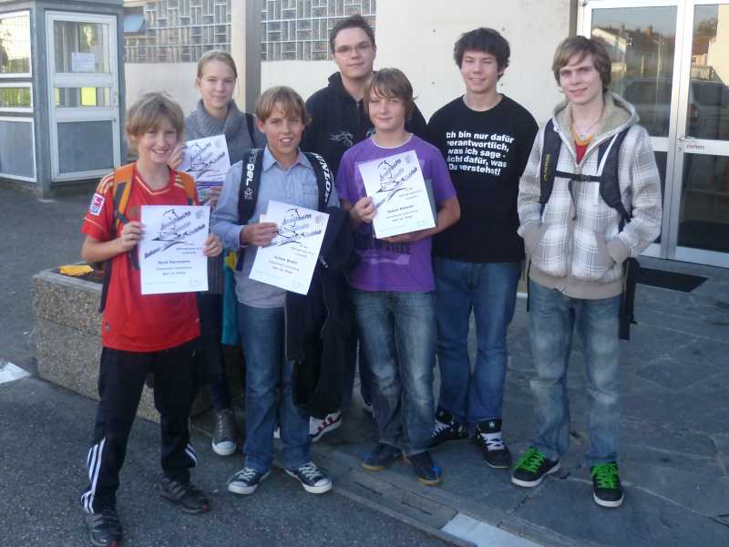

"Warmspielen" der Jüngsten unter Bewunderung der Familie Moser

Daniel war von Anfang an siegesbewußt - und er hatte recht!

Katja hochkonzentriert ...

... ebenso wie Julian

Betreuer und Chronist:Jugendleiter Jochen

Harte Kämpfe im Dreiländercup

Vesperpause

Turnieratmosphäre

Unsere "Anfänger" waren guter Stimmung

Die gesamten Laufenburger Teilnehmer
Von links nach rechts: Nick Herrmann, Katja Stein, Julian Brotz, Jochen Bahner, Julian Bahner, Daniel Bahner, Nicolas Mesot